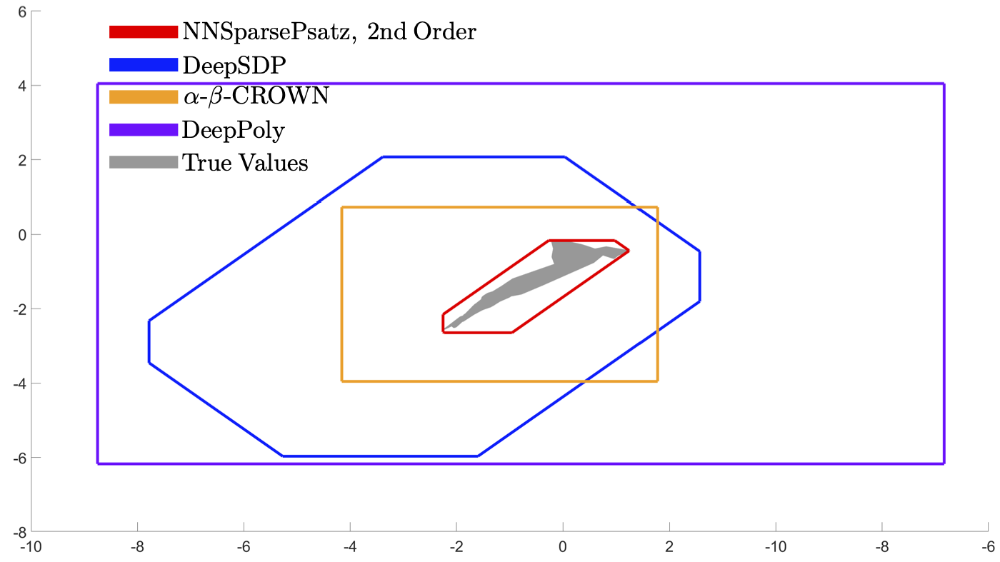

Neural Network Verification by Exploiting Sparsity
GitHub, PaperMotivation
- Neural networks are more widespread and obtain robustness guarantees for them are important, especially in safety-critical applications.
- A trained neural network’s sensitivity to adversarial attacks is one of its greatest shortcomings.
Contribution
- Neural network is written as a set of equality and inequality constraints from bounds on the non-linear activation functions.
- Approaching the problem from a different perspective, use sparse polynomial optimisation theory and Positivstellensatz, a key result in real algebraic geometry.
- Exploit the natural cascading structure of the neural network using ideas from chordal sparsity and semi-definite programming.
The sparsity pattern of the constraint matrix for a twenty-layer neural network with five hidden units in each layer.

Diagram of a neural network showing how it is broken down by its natural cascading structure.
Analysis
- The Positivstellensatz provides a trade-off between conservativeness and complexity within the optimisation problem.
- Scalability of the method is drastically improved as the constraint matrices are broken down into smaller constraint matrices.
Results
- Numerical examples show that bounds can be tightened significantly, over state-of-the-art approaches.
- The computational time to solve the optimisation problem against similar approaches is improved.
- Compare the solve times of different solvers and show how accuracy can be improved at the expense of increased computation time.
Comparing the computational time of different approaches for a neural network with two nodes in each layer and a varying number of layers.
Comparing the accuracy of different approaches to the true values of the neural network’s output.